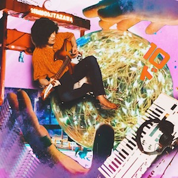
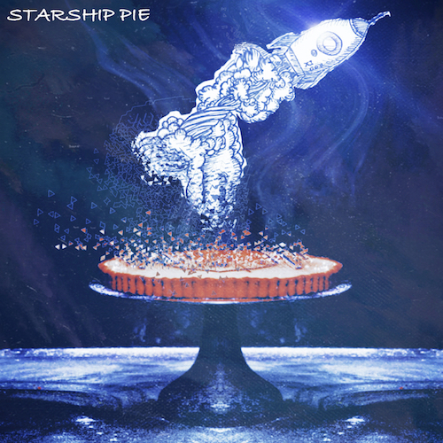
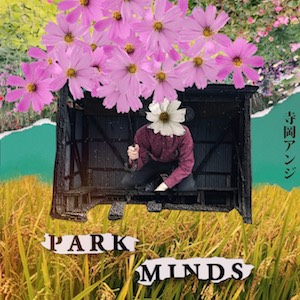

ゆうやけしはす
Song / 「サイケな野球」「じゃあまあいいか」「ロックンロール教団のうた」
MIX
MUSIC / WORKS / PROFILE
万華鏡のように色彩が移り変わる音響表現を軸に、日本語のポップミュージックを制作するソロプロジェクト。作詞・作曲から録音、ミキシングまで、音源制作に関わる工程を自身で行っています。

1st EP / 2022.12.09

2nd Album / 2022.09.08
1st Single / 2021.05.14

1st Album / 2020.11.01
Song / 「サイケな野球」「じゃあまあいいか」「ロックンロール教団のうた」
MIX
Song / 「TAKE it JOKE」「ハミングワード」
REC, MIX, MASTERING
Song / 「ハルトユメノトチュウ」「いつかのように」「浮かぶ」
REC, MIX, MASTERING
Album / 「DOWN to EARTH」
REC, MIX, MASTERING
shop link
Album / 「オリジナルど底辺のカス」
REC, MIX, MASTERING
shop link
Podcast / Opening MUSIC
web link
愛知県一宮市出身。2020年より寺岡アンジ名義での音源制作を開始。宅録を中心に、サイケデリックやドリームポップの要素を取り入れながら、日常や内面世界をテーマにした日本語の楽曲を制作しています。
現在は、ブラウザ上で楽曲の聴こえ方を切り替えるなど、音楽とWebを一つの作品として体験するプロジェクトにも取り組んでいます。
1996.11 愛知県一宮市にて誕生。
2017.04 音響・録音系専門学校を卒業し上京。
2020 寺岡アンジ名義での音源制作を開始。
2020.11 1st Album『PARK MINDS』を公開。
2021.05 1st Single「Muzak」を公開。
2022.09 2nd Album『STARSHIP PIE』を公開。
2022.12 1st EP『10ド』を公開。
2026 音楽とWebを組み合わせた新作プロジェクトを始動。